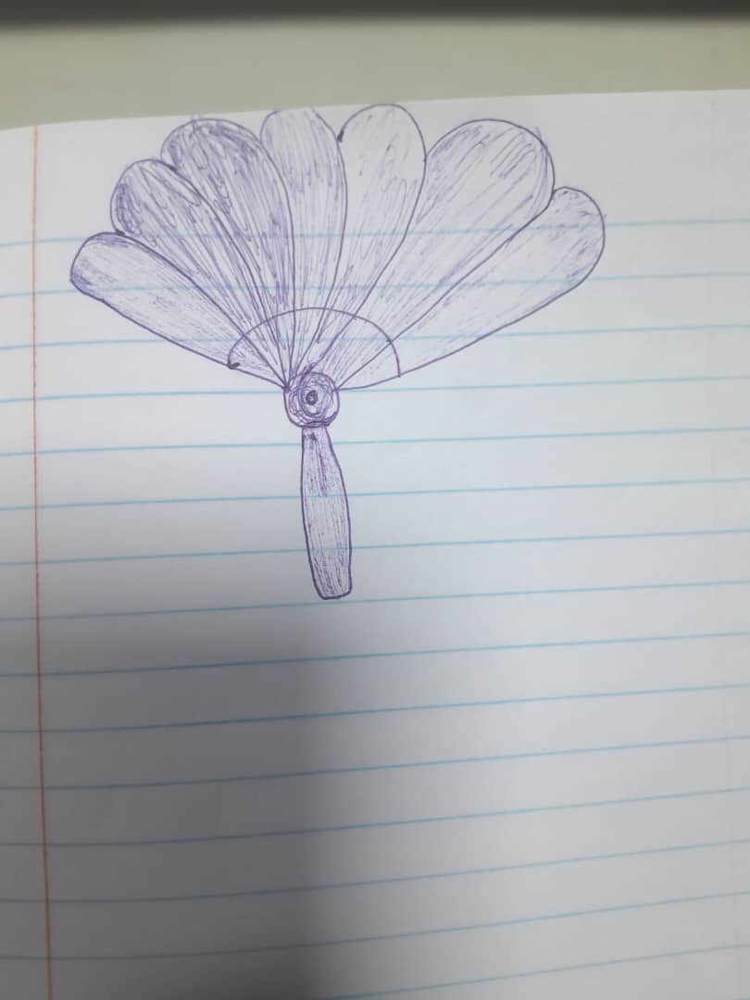

On This Page
week 3: Introduction to Design thinking
Quick Summary
- Skills Learned:
- Digital Tools and Software Used:
- Key Concepts:
Design thinking, solution ideation techniques, sketching concepts
Paper and pencil (manual sketching)
Human-centered design, empathy mapping, brainstorming, idea visualization
Introduction
Week 3 focused on understanding and applying the Design Thinking process. Design Thinking is a creative, human-centered approach to problem-solving that emphasizes understanding the needs and experiences of the people you are designing for. Rather than jumping straight to solutions, this approach encourages empathy, exploration, and iteration.
Through Design Thinking, we learn to empathize with users by observing and engaging with them to understand their challenges and perspectives. Next, we define the problem clearly, ensuring we are solving the right issue rather than just addressing symptoms. This is followed by ideation, where we generate a wide range of possible solutions without judgment, encouraging creativity and out-of-the-box thinking. Finally, the process involves prototyping and testing, allowing us to create tangible representations of our ideas, receive feedback, and refine our solutions iteratively.
Overall, Design Thinking helps turn complex problems into opportunities for innovative solutions that are practical, user-focused, and impactful. During the week, we practiced these stages through hands-on exercises, which helped us develop a deeper understanding of how to apply this methodology to real-world challenges.
Process Documentation
Weekly Task
This week’s design thinking challenge was to identify an annoying object or issue and apply the design thinking process to develop possible solutions.
Object identified
The dysfunctional air conditioner in the UniPod, which causes extremely high temperatures during the summer, making the workspace uncomfortable and reducing productivity.
Empathise
To understand the real impact of the problem, I interviewed my colleagues, Retiana and Patience. Both shared similar frustrations - difficulty concentrating, discomfort during long working sessions, and occasional headaches due to the heat. They also noted that the temperature affected the performance of some machines and made the learning environment less conducive.
Define
The problem statement identified was: “How might we make the UniPod workspace cooler and more comfortable during the summer, even when the air conditioner is not functional?”
Ideate
During brainstorming, I explored creative and low-cost ideas that could help reduce indoor heat and improve airflow. Some potential solutions included:
- Installing reflective window films or curtains to block out excessive sunlight.
- Designing a low-cost DIY cooling system using fans, ice packs, or water-based cooling.
- Introducing indoor plants to improve air quality and create a cooler environment.
- Creating a heat monitoring dashboard to track indoor temperature and notify when it exceeds a set limit.
- Scheduling high-energy tasks during cooler hours and encouraging flexible working patterns.
- Designing a portable “Cool Corner” booth using recycled materials, equipped with fans and shade for short breaks.
Prototype
The next phase is to prototype my top idea. In my case, I chose a portable DIY fan that I can easily 3D print here at UniPod. For this week, i only created a sketch of the product which serves as my low-fidelity prototype. Next week, I will create a 2D and 3D model of the same product.
